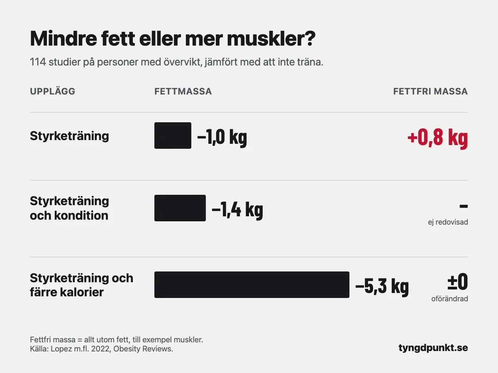

Kan man gå ner i fett och bygga muskler samtidigt?
Ja, det går, särskilt om du är ny på styrketräning eller har en del fett att ta av. Det kallas ibland rekomposition. Styrketräna med vikter som ökar över tid, ät ungefär 1,6–2,4 gram protein per kilo och dag och håll underskottet litet, under 500 kcal om dagen. För den som redan är vältränad och smal blir förändringen liten.
Kalkylatorn visar uträkningen steg för steg.
Till kalkylatornKan man gå ner i fett och bygga muskler samtidigt?
Det vanliga upplägget är att bygga muskler när man äter lite mer än man gör av med och gå ner i fett när man äter mindre. Men det är inga vattentäta skott. I en översikt från det internationella idrottsnutritionssällskapet ISSN 2026 går Naddafha och kollegor igenom forskningen om att öka muskelmassan och minska fettet under samma period. Deras slutsats är att det går när tre saker kombineras: styrketräning där belastningen ökar, tillräckligt med protein och ett lagom energiintag.
Ett tydligt exempel är Longlands studie från 2016. 40 unga män åt ungefär 40 procent mindre än sitt behov i fyra veckor och tränade styrka och intervaller sex dagar i veckan. De som åt 2,4 gram protein per kilo ökade sin fettfria massa, alltså allt utom fett, med 1,2 kg och gick samtidigt ner 4,8 kg fett. De som åt 1,2 gram per kilo ökade bara 0,1 kg.
Det var ett hårt och noga styrt upplägg, där deltagarna fick maten av forskarna och tränade nästan varje dag. Det visar att det går. Lätt var det inte.
Vem kan bygga muskler och gå ner i vikt samtidigt?
Enligt Naddafha och kollegor är effekten störst hos den som är otränad eller har mer fett, och mindre hos den som redan är vältränad eller smal. Även äldre kan lyckas om de styrketränar under ledning och äter tillräckligt med protein.
| Utgångsläge | Chans att göra båda samtidigt | Rimligt upplägg |
|---|---|---|
| Ny på styrketräning, mer fett att ta av | Störst | Litet underskott, mycket protein, styrketräning |
| Ny på styrketräning, ganska smal | Måttlig | Ät runt ditt behov, mycket protein |
| Vältränad, mer fett att ta av | Måttlig | Litet underskott, fortsätt träna tungt |
| Vältränad och smal | Liten | Välj ett mål i taget |
Tabellen bygger på slutsatserna i översikten. Den är ingen exakt gräns, utan visar åt vilket håll det lutar.
Den största sammanställningen på personer med övervikt gjordes av Lopez och kollegor 2022. De slog ihop 114 studier med 4 184 deltagare. Jämfört med grupper som inte tränade gav styrketräning ensam 1,0 kg mindre fett och 0,8 kg mer fettfri massa. Det är alltså båda sakerna på en gång, utan att deltagarna åt mindre.
| Upplägg | Fettmassa | Fettprocent | Fettfri massa |
|---|---|---|---|
| Styrketräning | −1,0 kg | −1,6 procentenheter | +0,8 kg |
| Styrketräning och kondition | −1,4 kg | −2,3 procentenheter | ej redovisad |
| Styrketräning och färre kalorier | −5,3 kg | −3,8 procentenheter | oförändrad |
Jämfört med grupper utan träning. Källa: Lopez m.fl. (2022).

Tabellen visar valet du står inför. Med färre kalorier försvinner mest fett, men musklerna ökar inte, de behålls. Utan underskott ökar musklerna, men fettet minskar långsamt. Resultaten var desamma för kvinnor och män och i olika åldrar.
Hur mycket ska man äta för att gå ner i fett och bygga muskler?
Ungefär ditt behov, eller lite under. Murphy och Koehler slog 2022 ihop studier där deltagarna styrketränade och åt mindre än sitt behov i minst tre veckor. Muskelmassan ökade mindre med underskott än utan, och vid ett underskott på ungefär 500 kcal om dagen uteblev ökningen helt. Styrkan ökade däremot nästan lika mycket.
Vill du både gå ner i fett och bygga muskler ska underskottet alltså vara klart mindre än 500 kcal. Har du mycket fett att ta av passar ett litet underskott. Är du redan ganska smal och mest vill bygga muskler kan du äta runt ditt behov och låta fettet minska långsamt av träningen.
Börja med att räkna ut ditt kaloribehov. Kalkylatorn använder Mifflin–St Jeor och en faktor för hur många pass du tränar i veckan. Välj "Gå ner i fett" och en låg takt.
Räkneexempel. Maria är 35 år, 168 cm lång och väger 75 kg. Hon har precis börjat styrketräna tre pass i veckan och vill gå ner i fett och bygga muskler.
- Vilan: 10 × 75 + 6,25 × 168 − 5 × 35 − 161 = 1 464 kcal.
- Med tre pass i veckan: 1 464 × 1,45 ≈ 2 123 kcal om dagen.
- Takt 0,25 kg i veckan: 0,25 × 7 700 ÷ 7 = 275 kcal mindre per dag.
- Att äta: 2 123 − 275 ≈ 1 850 kcal om dagen.
Underskottet på 275 kcal ligger gott och väl under gränsen på 500 kcal. Vill Maria gå ner 0,5 kg i veckan blir underskottet 550 kcal, och då är det troligare att musklerna bara behålls i stället för att öka. Det är inget misslyckande, men då handlar det om en deff. Hur du gör en deff som skonar musklerna står i deffa utan att tappa muskler.
Hur mycket protein behöver man för att bygga muskler och gå ner i fett?
Ganska mycket. Naddafha och kollegor anger ungefär 1,6–2,4 gram per kilo och dag, och den högre delen när man äter mindre än sitt behov eller är smal. Morton och kollegor slog 2018 ihop 49 studier med 1 863 deltagare. Muskelmassan ökade inte mer när proteinet gick över ungefär 1,6 gram per kilo.
Med ett underskott talar Longlands studie för att ligga högre. Där var det skillnaden mellan 1,2 och 2,4 gram per kilo som avgjorde om musklerna ökade.
För Maria blir det:
- 1,6 gram per kilo: 1,6 × 75 = 120 gram om dagen.
- 2,2 gram per kilo: 2,2 × 75 = 165 gram om dagen.
Kalkylatorn för proteinbehov räknar med 2,2 gram per kilo när målet är att gå ner i fett, alltså i den övre delen av spannet. Hur du räknar ut ditt eget behov och vad det blir i mat står i hur mycket protein per dag.
Hur ska man träna för att gå ner i vikt och bygga muskler?
Styrketräna, och öka belastningen efter hand. Det är träningen som ger kroppen en anledning att bygga muskler, även när du äter lite mindre. Naddafha och kollegor sätter ökande belastning först i sina råd: fler reps eller mer vikt över tid, så att musklerna hela tiden får arbeta lite mer än de är vana vid.
Kondition kan läggas till. I Lopez sammanställning gav styrketräning och kondition tillsammans 1,4 kg mindre fett, mot 1,0 kg för styrketräning ensam. Men det är styrketräningen som bygger musklerna, och konditionen ska inte ta så mycket ork att styrkepassen blir sämre.
Översikten tar också upp sömn och återhämtning. Båda hjälper musklerna att växa medan fettet minskar.
Ska man bygga muskler eller gå ner i vikt först?
Det beror på var du börjar. Är du ny på styrketräning och har en del fett att ta av behöver du sällan välja. Ett litet underskott och styrketräning ger ofta båda delarna, och det är den gruppen där effekten är störst.
Är du redan vältränad och smal blir det svårare att göra båda på en gång. Då är det oftast tydligare att välja ett mål i taget: en period där du äter lite mer och bygger muskler, och en period där du deffar och försöker behålla dem. Murphy och Koehlers råd till den som vill bygga muskler är att undvika långa perioder med underskott.
Har du en sjukdom, tar läkemedel som påverkar vikten, är gravid eller ammar, eller har eller har haft en ätstörning ska du inte ändra kosten på egen hand. Prata med vården först.
Hur vet man att det fungerar?
Vågen räcker inte. Går du ner i fett och upp i muskler samtidigt kan vikten stå nästan still, trots att kroppen förändras. Följ i stället tre saker tillsammans:
- Styrkan. Ökar vikterna på stången eller antalet reps vecka för vecka tränar du rätt.
- Midjemåttet. Minskar det medan vikten står still är det ett tecken på att fettet minskar.
- Vikttrenden. Väg dig några gånger i veckan och titta på snittet, inte på enskilda dagar.
Ökar styrkan och minskar midjan går det åt rätt håll, även om vågen inte rör sig. Står både vikten, midjan och styrkan still i flera veckor är det dags att se över maten. Hur du skiljer en riktig platå från vanliga svängningar står i varför står vikten still trots kaloriunderskott.
I Tyngdpunkt loggar du både träning och mat. En gång i veckan ställer vi vikttrenden mot styrkan i varje övning, till exempel "Går ner och blir starkare", och föreslår en ändring i taget, med uträkningen synlig.
Vanliga frågor
Kan man bygga muskler i kaloriunderskott?
Ja, men det blir svårare ju större underskottet är. I Murphy och Koehlers analys uteblev muskelökningen vid ett underskott på ungefär 500 kcal om dagen. I Longlands studie ökade den fettfria massan med 1,2 kg trots ett stort underskott, men då åt deltagarna 2,4 gram protein per kilo och tränade sex dagar i veckan.
Gäller det för kvinnor också?
Ja. I Lopez sammanställning var resultaten desamma för kvinnor och män. Eftersom kvinnor oftast väger mindre blir både underskottet och proteinet i gram lägre. Räkna på din egen vikt i stället för att ta någon annans siffror.
Går det att bygga muskler och gå ner i fett efter 40?
Ja. Naddafha och kollegor skriver att det går även för äldre, särskilt med styrketräning under ledning och tillräckligt med protein. I Mortons analys gav extra protein mindre effekt ju äldre deltagarna var, så det är extra viktigt att få i sig tillräckligt.
Varför går jag inte ner i vikt fast jag tränar?
Om du börjat styrketräna kan en del av förklaringen vara att musklerna ökar medan fettet minskar, så att vikten står still. Följ midjemåttet och styrkan. Minskar inget av dem äter du sannolikt runt ditt behov eller mer, och då behövs ett litet underskott för att fettet ska minska.
Källor
- Naddafha S, Schoenfeld BJ, Antonio J, Stout JR (2026). Body recomposition in adults: mechanisms, modulators, and practical algorithms for simultaneous skeletal muscle mass gain and fat mass loss. Journal of the International Society of Sports Nutrition, 23(1), 2743880. Europe PMC
- Lopez P, Taaffe DR, Galvão DA, m.fl. (2022). Resistance training effectiveness on body composition and body weight outcomes in individuals with overweight and obesity across the lifespan: A systematic review and meta-analysis. Obesity Reviews, 23(5), e13428. Europe PMC
- Murphy C, Koehler K (2022). Energy deficiency impairs resistance training gains in lean mass but not strength: A meta-analysis and meta-regression. Scandinavian Journal of Medicine & Science in Sports, 32(1), 125–137. Europe PMC
- Morton RW, Murphy KT, McKellar SR, m.fl. (2018). A systematic review, meta-analysis and meta-regression of the effect of protein supplementation on resistance training-induced gains in muscle mass and strength in healthy adults. British Journal of Sports Medicine, 52(6), 376–384. Europe PMC
- Longland TM, Oikawa SY, Mitchell CJ, Devries MC, Phillips SM (2016). Higher compared with lower dietary protein during an energy deficit combined with intense exercise promotes greater lean mass gain and fat mass loss: a randomized trial. The American Journal of Clinical Nutrition, 103(3), 738–746. Europe PMC